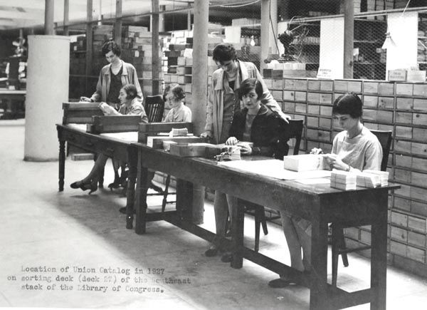

This site is built from letters Sam and Dora Diamondstein exchanged between 1900 and 1926 — a window into one period of their lives, not the whole of it, reconstructed as honestly as the letters, the family tree, and living memory allow.
Choose how you'd like to explore.

Read letter by letter
Every Letter
Letters, translated and transcribed, sorted by era — the most basic way to browse the archive.
114 letters, 1900–1926

Meet the people
Every Person
Everyone named in the letters — family, friends, and the people caught up in their story.
16 people

Browse
The Couple in Pictures
Real photographs of Sam and Dora themselves, young to old — the two people whose letters built this whole archive.
Read it as a story
Read the Story
The same events, two ways — pick the pace and format that suits you. Both are woven from the real letters, with real photographs throughout.

~30 min
Read the Story: Complete Version
The whole arc, every detail — six chapters, book-style with a cover, real photos and letters linked inline.

Shorter version · ~10 min
Read the Story: Condensed Version
The same story, condensed — five chapters, with real photos and portraits woven in exactly where they belong.

Follow the journey
Follow the Journey
Every place this family went, on a map — each one explained, not just shown.
5 maps + timeline

Worth Knowing
Background & Context
The real history behind the letters — the Pale of Settlement, the Panic of 1907, the Cuffley Zeppelin — in one place.
14 short reads

See how this site was built
How This Was Made
The process behind the archive — a real experiment in using AI to do genealogical research honestly.